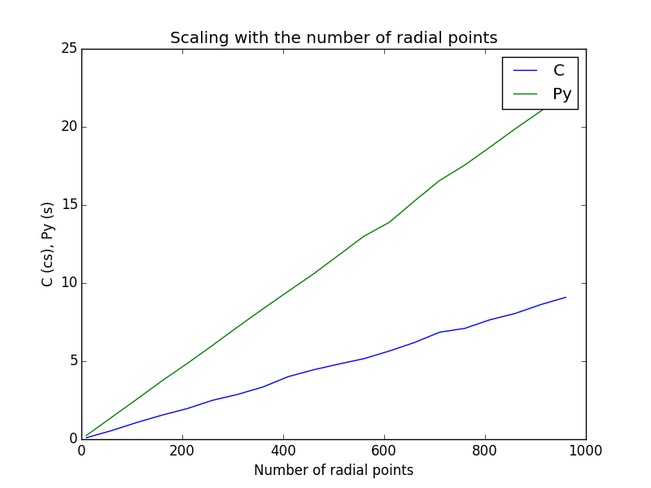
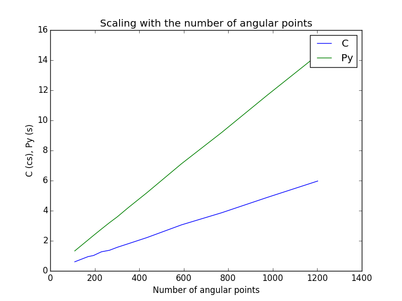
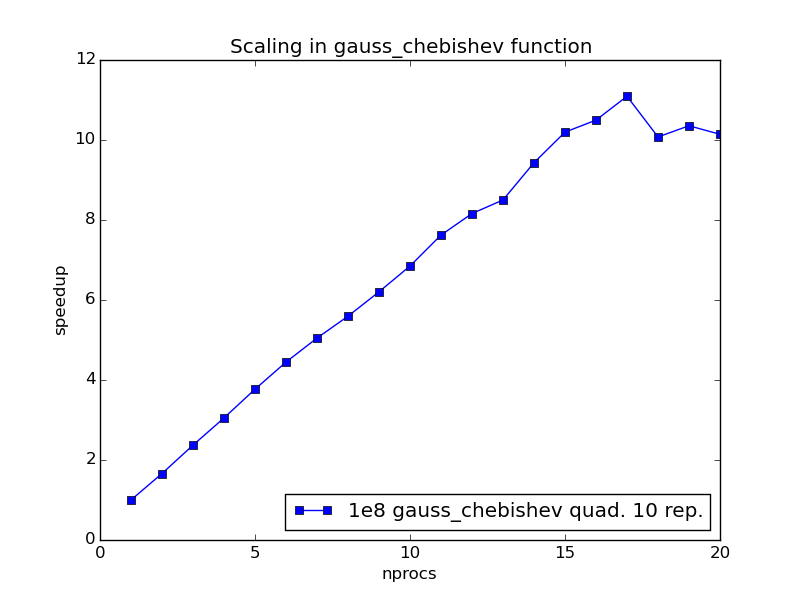
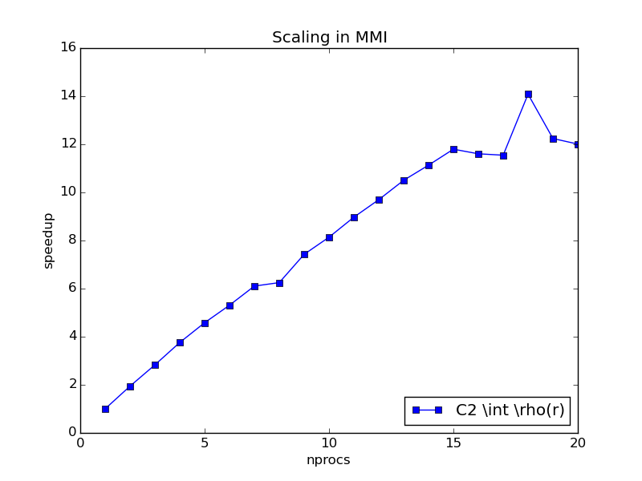
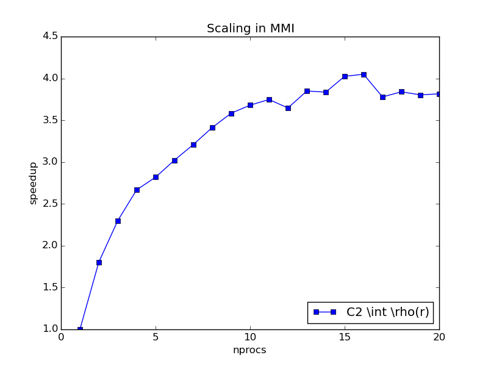
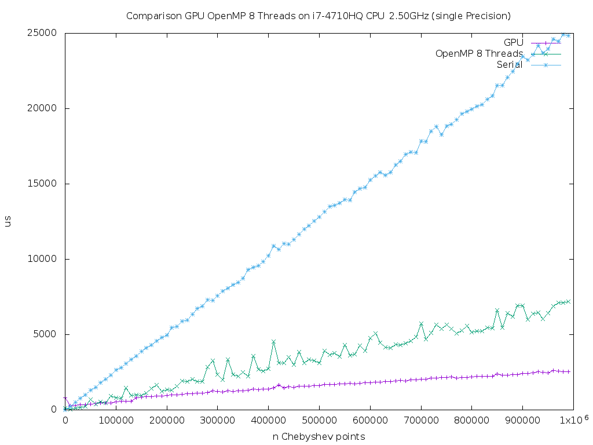
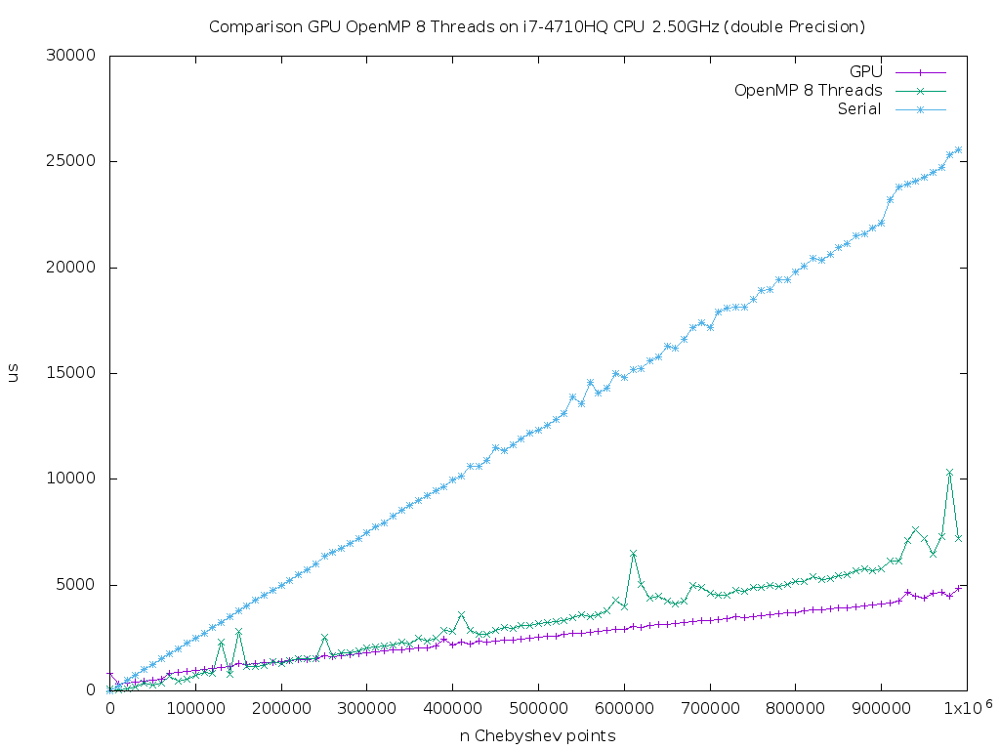

Results¶
Numerical Any particle Molecular Orbital (nAPMO) package.
| Author: | Fernando Posada Correa, MHPC, 2015 |
|---|
- the ipython notebook.
This folder contains some experiments/results using the code. The first one is a ipython notebook called nAPMO.ipynb which contains information step by step on how the code works.
Link: nAPMO notebook example
nbviewer: http://nbviewer.ipython.org/url/efposadac.github.io/nAPMO/_downloads/nAPMO.ipynb
- Integration on diatomic Molecules
The second example can be found in the folder Density. This contains results for the calculation of \(\int \rho({\bf r})\) for diatomic molecules for elements from Z = 1, up to Z = 8, with exception of Helium. The outcome of this test must be:
Grid Information:
-----------------
Radial Points: 100
Angular Points: 194
System Int C Int Py Error Time Py Time C
H2 2.00010688 2.00010688 0.00010688 4.3246562 0.0331886
Li2 6.00025286 6.00025286 0.00025286 10.3566766 0.1109531
Be2 8.00023682 8.00023682 0.00023682 10.2098806 0.1123509
B2 10.00049433 10.00049433 0.00049433 10.1175656 0.1098449
C2 12.00127662 12.00127662 0.00127662 10.2129803 0.1131680
N2 14.00085234 14.00085234 0.00085234 10.4540348 0.1119723
O2 16.00068683 16.00068683 0.00068683 10.2155397 0.1107540
The grid used for this calculation was 110-194 (rad.-ang.). It can be seen that the performance of Python code is really slow, taking in to account that for each molecule the code is calculating only one integral. On the other hand, the C code is two orders of magnitude faster.
- Performance (Serial)
An script to plot the comparison of the performance (scaling with respect to the grid points) and comparison between timings of C and Python codes is provided in the Performance folder.
This script produces the following graphs to show the scaling with respect to the number of grid points (radial and angular):


Timing for Python code Py is in centiseconds (cs). As shown in the plots, the algorithm is linear with respect with the number of angular or radial points, the important thing here is the prefactor in booth cases, in the case of C code, the prefactor is two orders of magnitude smaller than the Python’s code prefactor. For the integral of this test case \(\int \rho({\bf r})\) for a H2 molecule, a grid of 110-194 is enough to reach the exact value, this integral takes 2.6 s in the Python code and 0.01 s in the C one.
As conclusion it can be said that the use of C code has improve the calculation time.
- OpenMP Implementation
The following graphs show the scaling of OpenMP implementation on the generation of the Gauss-Chebishev quadrature and in the overall Molecular Multicenter integrator (MMI) up to 20 threads in a Intel Xeon E5-2680V2 Ivy Bridge 10 cores 20 Threads.


The Scaling seems to be linear up to 18 threads for a 5810-1000 grid, which is the biggest grid used so far (in a real case scenario unnecessary). The time for one thread was 42.38 s and for 20, 3.30 s, supposing a speedup of approx. 12x.
For a real case scenario, i.e. a 1202-100 grid (next plot), the speed up goes up to 4x because for such grid the serial part of the code becomes to be more relevant than the parallel part. Times: one thread: 1.11 s and for 20 threads 0.28 s

- CUDA Implementation


Notes on CUDA implementation.
The proposed parallelization strategy consists on copy all structures to the device (System and Grid), calculate Gauss-Chebyshev points on device, copy Lebedev pointer from host to device, run in two dimensional grids of threads and keep the same structure of calculation by calling __device__ kernels for tasks such as the calculation of Becke weights, and the calculation of the Functional.
We found that to optimize the occupancy of the device the optimum number of THREADS_PER_BLOCK is 8. it gives around 85% of occupancy (for a optimal number of registers), however the code can is, in some cases, slower than the serial version.
The number of registers used for the kernel is too high?
With the proposed strategy the kernel needs 71 registers against an optimal of 36. The use of such amount of registers generates many threads to be in idle state, because the amount of registers in the SMD is limited, if there are not enough registers to calculate all wraps the total execution time for a given block will increase.
The next section contains notes on the solution a this problem in order to get the maximum possible performance.
Test context:
As reference we calculate molecular integration over two systems, one with 14 functions (H2) and another with 56 (O2). The grid used is a 1202 x 1000 grid points. The following table shows the execution time for each implementation. OMP 4 threads and CUDA 71 registers kernel.
| System | Serial | OMP | CUDA |
|---|---|---|---|
| H2 | 1.8 | 0.5 | 2.3 |
| O2 | 5.8 | 1.6 | 1.2 |
Proposed solutions:
- Force the use of less registers via compiler switch
--maxrregcount 36in compilation time.
Forcing the use of less registers increases the registers spilling which generates a excessive use of global device memory. As a consequence the time increases. See following table.
| System | Serial | 71R | 36R |
|---|---|---|---|
| H2 | 1.8 | 2.3 | 3.1 |
| O2 | 5.8 | 1.2 | 1.6 |
- Reduce the amount of operations in the kernel.
After reducing some operations within the kernel such as conversion from spherical to cartesian and rescaling the interval of radial quadrature, the amount of registers was reduced to 69. The time after this change is:
| System | Serial | 71R | 36R | 69R |
|---|---|---|---|---|
| H2 | 1.8 | 2.3 | 3.1 | 2.2 |
| O2 | 5.8 | 1.2 | 1.6 | 1.2 |
As shown in the table there is no improvement in execution time.
And Memory throughput?
- So far the kernel have been programed over local memory only. Using shared memory could increase the performance. The integral value is the sum of several evaluations of the functional
Fat pointr. Such reduction over the integral value has to be done as atomic operation to avoid race condition. So far the atomic addition was done in local memory. The optimization is to implement the atomic addition in shared memory per block and in local memory among blocks. The result is the following:
71R is the kernel with optimization 2. 75R is the kernel without optimization. 36R is the kernel with optimization 1 and 2. OMP is using 4 threads:
| System | Serial | OMP | 75R | 71R | 36R |
|---|---|---|---|---|---|
| H2 | 1.8 | 0.5 | 0.16 | 0.15 | 0.15 |
| O2 | 5.8 | 1.6 | 0.33 | 0.32 | 0.55 |
As shown in the table, restrict the number of registers can lead to a poor performance, while the 71-75 registers kernel even though it allows only a occupancy of 40-47% provides the best performance, which is around 12x - 18x.
Note:
All *.dens files are density matrices to perform the integration.